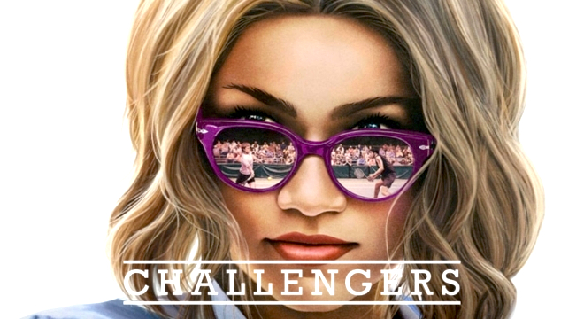

Challengers
2024.

Challengers je američka romantična sportska drama iz 2024. koju je režirao Luca Guadagnino prema scenariju Justina Kuritzkesa, a glume Zendaya, Josh O'Connor i Mike Faist. Film se vrti oko ljubavnog trokuta između ozlijeđene teniske zvijezde koja je postala trenerica (Zendaya), njezinog bivšeg dečka tenisača (O'Connor) i njezinog supruga teniskog prvaka (Faist) tijekom trinaest godina njihove zajedničke veze, koja kulminira u meču posljednja dva para na ATP Challenger Touru.
Pogledaj ovdje
Dune: Part two
2024.

Dune: Part Two je epski znanstveno-fantastični film iz 2024. koji je režirao i producirao Denis Villeneuve, koji je zajedno s Jonom Spaihtsom napisao scenarij. Nastavak Dine, drugi je od dvodijelne adaptacije romana Dina iz 1965. Franka Herberta.
Pogledaj ovdje
Dune: Part one
2021.

Dina američki je epski znanstvenofantastični film iz 2021. u režiji Denisja Villeneuvea čiji su scenarij napisali Villeneuve, Jon Spaihts i Eric Roth. Prvi je dio dvodijelne ekranizacije istoimenog romana Franka Herberta iz 1965. i pokriva prvi dio te knjige.
Pogledaj ovdje
Malcolm and Marie
2021.

Malcolm & Marie američka je crno-bijela romantična drama iz 2021. koju je napisao, koproducirao i režirao Sam Levinson. U filmu glume Zendaya i John David Washington, a prati pisca-redatelja i njegovu djevojku čija je veza na kušnji u noći premijere njegovog posljednjeg filma kada otkrića o njima samima isplivaju na površinu. Projekt je bio prvi holivudski dugometražni film koji je u cijelosti napisan, financiran i produciran tijekom karantina uzrokovanih COVID-19, a snimanje se odvijalo u tajnosti u lipnju i srpnju 2020.
Pogledaj ovdje
Space Jam: A new legacy
2021.

Space Jam: A New Legacy je američka igrana/animirana sportska komedija iz 2021. koju su producirali Warner Animation Group, Proximity Media i The SpringHill Company, a distribuira Warner Bros. Pictures. Služi kao samostalni nastavak Space Jama (1996.) i prvi je film prikazan u kinima s likovima Looney Tunesa od Looney Tunes: Ponovno u akciji (2003.).
Pogledaj ovdje
Spider-Man: No way home
2021.

Spider-Man: Put bez povratka je američki film iz 2021. godine temeljen na liku Spider-Mana u izdanju Marvel Comicsa. Film je u koprodukciji Columbia Pictures i Marvel Studios, a distribuira ga Sony Pictures Entertainment. Riječ je o nastavku filma Spider-Man: Daleko od kuće (2019.), završetku jedne trilogije i dvadeset i sedmom filmu u Marvel Cinematic Universeu (MCU).
Pogledaj ovdje
Euphoria
2019.-

Euforija američka je tinejdžerska dramska televizijska serija čiji je autor i scenarist Sam Levinson za HBO. Temelji se na istoimenoj izraelskoj mini seriji Rona Leshema i Daphne Levin. Serija prati grupu srednjoškolaca kroz njihova iskustva identiteta, traume, droge, prijateljstva, ljubavi i seksa.
Pogledaj ovdje
Spider-Man: Far from home
2019.
Spider-Man: Daleko od kuće američki je film o superjunaku iz 2019. temeljen na liku Spider-Mana iz Marvel Comicsa, u koprodukciji Columbia Pictures i Marvel Studios, a distribuira Sony Pictures Releasing. To je nastavak filma Spider-Man: Povratak kući i 23. film u Marvelovom filmskom svemiru.
Pogledaj ovdje
Smallfoot
2018.

Stopalići je američki računalno animirani glazbeni humoristični film iz 2018. godine u produkciji Warner Animation Group, a u distribuciji Warner Bros. Pictures. Film govori o skupini jetija koji susreću čovjeka, ali svaka od dvije vrste vjerovala je da je druga samo legenda.
Pogledaj ovdje
Spider-Man: Homecoming
2017.
Spider-Man: Homecoming američki je film o superjunaku iz 2017. temeljen na liku Spider-Mana iz Marvel Comicsa, u koprodukciji Columbia Pictures i Marvel Studios, a distribuira Sony Pictures Releasing. To je drugi reboot filma o Spider-Manu i 16. film u Marvelovom filmskom svemiru.
Pogledaj ovdje
The greatest showman
2017.

The Greatest Showman je američka biografska glazbena drama iz 2017. koju je režirao Michael Gracey prema scenariju Jenny Bicks i Billa Condona te Bicksovoj priči. U filmu glumi glumačka ekipa koju predvode Hugh Jackman, Zac Efron, Michelle Williams, Rebecca Ferguson i Zendaya.
Pogledaj ovdje
The OA
2016.

OA je američka misterijska dramska televizijska serija s elementima znanstvene fantastike, nadnaravnog i fantazije. OA je debitirao na Netflixu 16. prosinca 2016. Stvorili su ju izvršni producenti Brit Marling i Zal Batmanglij, serija je njihova treća suradnja.
Pogledaj ovdje
KC Undercover
2015.-2018.
K.C. Undercover je američka humoristična televizijska serija koju je kreirala Corinne Marshall i emitirala se na Disney Channelu od 18. siječnja 2015. do 2. veljače 2018. U seriji glume Zendaya, Veronica Dunne, Kamil McFadden, Trinitee Stokes, Tammy Townsend i Kadeem Hardison.
Pogledaj ovdje
Shake it up
2010.-2013.
Shake It Up je američki sitcom koji se izvorno emitirao na Disney Channelu od 7. studenog 2010. do 10. studenog 2013. Stvorio Chris Thompson i glume Bella Thorne i Zendaya, serija prati avanture CeCe Jones (Bella Thorne) i Rockyja Blue (Zendaya) dok glume pozadinske plesačice u lokalnoj emisiji, Shake It Up Chicago.
Pogledaj ovdje